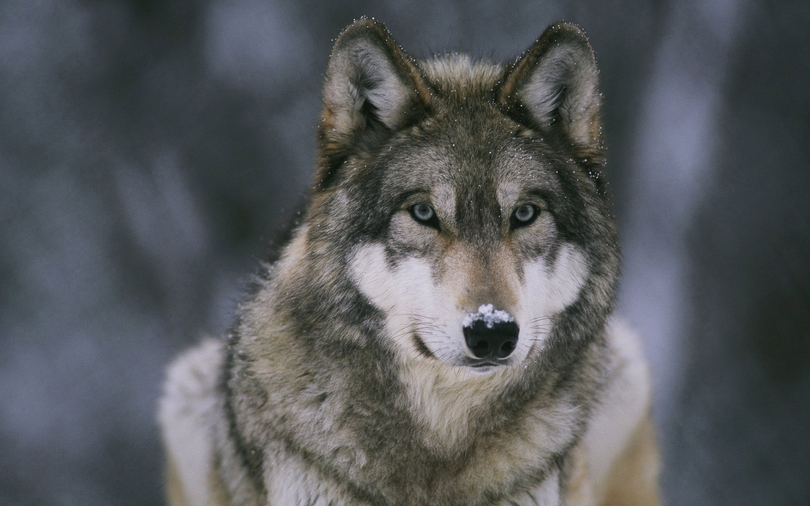

The story about wolfs
Wolf Questions
How do wolves hunt?
- wolves chase a weak animal till it is tried
- next they surround the animal
- finally they attack
- wolves howl to say where they are
- they also howl to tell what they are doing
- or just because they are happy
The gray wolf is a social animal, whose basic social unit consists of a mated pair, accompanied by the pair's adult offspring. The average pack consists of a family of 5-11 animals (1-2 adults, 3-6 juveniles and 1-3 yearlings), or sometimes two or three such families, with exceptionally large packs consisting of 42 wolves being known. Triggers for dispersal include the onset of sexual maturity and competition within the pack for food. In ideal conditions, the mated pair produces pups every year, with such offspring typically staying in the pack for 10-54 months before dispersing. The distance travelled by dispersing wolves varies widely; some stay in the vicinity of the parental group, while other individuals may travel great distances of 390 km, 206 km, and 670 km from their natal packs. A new pack is usually founded by an unrelated dispersing male and female, travelling together in search of an area devoid of other hostile packs. Wolf packs rarely adopt other wolves into their fold, and typically kill them. In the rare cases where other wolves are adopted, the adoptee is almost invariably an immature animal (1-3 years of age) unlikely to compete for breeding rights with the mated pair. In some cases, a lone wolf is adopted into a pack to replace a deceased breeder. During times of ungulate abundance (migration, calving etc.), different wolf packs may temporarily join forces.
Are wolves mean?
Guess they're not.
Why do wolves howl?
Wolves are highly territorial animals, and generally establish territories far larger than they require to survive in order to assure a steady supply of prey. Territory size depends largely on the amount of prey available and the age of the pack's pups, tending to increase in size in areas with low prey populations or when the pups reach the age of 6 months, thus having the same nutritional needs as adults. Wolf packs travel constantly in search of prey, covering roughly 9% of their territory per day (average 25 km/d or 15 mi/d).
The core of their territory is on average 35 km2 (14 sq mi), in which they spend 50% of their time. Prey density tends to be much higher in the territory's surrounding areas, though wolves tend to avoid hunting in the fringes of their range unless desperate, due to the possibility of fatal encounters with neighboring packs. The smallest territory on record was held by a pack of six wolves in northeastern Minnesota, which occupied an estimated 33 km2 (13 sq mi), while the largest was held by an Alaskan pack of ten wolves encompassing a 6,272 km2 (2,422 sq mi) area. Wolf packs are typically settled, and usually only leave their accustomed ranges during severe food shortages. Wolves defend their territories from other packs through a combination of scent marking, direct attacks and howling (see Communication). Scent marking is used for territorial advertisement, and involves urination, defecation and ground scratching. Scent marks are generally left every 240 metres throughout the territory on regular travelways and junctions. Such markers can last for 2–3 weeks, and are typically placed near rocks, boulders, trees or the skeletons of large animals. Territorial fights are among the principal causes of wolf mortality, with one study concluding that 14–65% of wolf deaths in Minnesota and the Denali National Park and Preserve were due to predation by other wolves.
What does a wolf's skeleton look like?